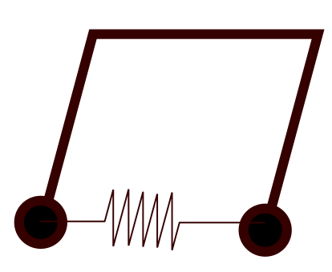

Equações diferenciais
Quantidades que mudam continuamente no tempo ou no espaço são frequentemente modeladas por equações diferenciais. As equações diferenciais precisam de condições suplementares para definir de maneira única tanto a situação de modelagem quanto as soluções teóricas. O problema de valor inicial (PVI), no qual todas as condições são dadas em um único valor da variável independente, é a situação mais simples. Muitas vezes, a variável independente neste caso representa o tempo.
Os métodos para PVIs geralmente começam a partir do valor inicial conhecido e iteram ou "avançam" a partir daí. Há um grande número desses métodos, em parte devido às diferenças em precisão, estabilidade e conveniência.
Um problema de valor inicial escalar de primeira ordem (PVI) é
\[u'(t) = f(t,u(t)), \qquad a \le t \le b, \\\\ u(a) =u_0.\]
Chamamos t de variável independente e $u$ de variável dependente. Se $u' = f(t,u) = g(t) + u h(t)$, a equação diferencial é linear; caso contrário, é não linear.
Uma solução de um problema de valor inicial é uma função $u(t)$ que torna ambas as equações $u'(t)=f\bigl(t,u(t)\bigr)$ e $u(a)=u_0$ verdadeiras.
Quando $t$ representa o tempo, às vezes escrevemos $\dot{u}$ (lê-se "u-ponto") em vez de $u'$.
Soluções numéricas
O pacote DifferentialEquations oferece solucionadores para problemas de valor inicial (PVIs). Vamos usá-lo para definir e resolver um problema de valor inicial para $u'=\sin[(u+t)^2]$ sobre $t \in [0,4]$, tal que $u(0)=1$.
Como muitos problemas práticos vêm com parâmetros que são fixos dentro de uma instância, mas variam de uma instância para outra, a sintaxe para PVIs inclui um argumento de entrada p que permanece fixo durante toda a solução. Aqui não queremos usar esse argumento, mas ele deve estar na definição para que o solucionador funcione.
Para criar um problema de valor inicial para $u(t)$, você deve fornecer uma função que calcula $u'$, um valor inicial para $u$ e os pontos finais do intervalo para $t$. O intervalo $t$ deve ser definido como (a,b), onde pelo menos um dos valores é um float.
using DifferentialEquations,LaTeXStrings
f = (u,p,t) -> sin((t+u)^2) # define du/dt, deve incluir o argumento p
u₀ = 1.0 # valor inicial
tspan = (0.0,4.0) # intervalo t Com os dados acima, definimos um objeto de problema de PVI e depois o resolvemos. Aqui, informamos ao solucionador para usar o método Tsit5, que é uma boa escolha inicial para a maioria dos problemas.
ivp = ODEProblem(f,u₀,tspan)
sol = solve(ivp,Tsit5());O objeto solução resultante pode ser mostrado usando plot.
plot(sol,label="solução",legend=:bottom,
xlabel="t",ylabel=L"u(t)",title=L"u'=\\sin((t+u)^2)") A solução também funciona como qualquer função que pode ser avaliada em diferentes valores de $t$.
@show sol(1.0); Nos bastidores, o objeto solução contém algumas informações sobre como os valores e o gráfico são produzidos:
[sol.t sol.u]O solucionador inicialmente encontra valores aproximados da solução (segunda coluna acima) em alguns tempos escolhidos automaticamente (primeira coluna acima). Para calcular a solução em outros momentos, o objeto realiza uma interpolação nesses valores. Este capítulo trata de como os valores discretos de $t$ e $u$ são calculados. Por enquanto, apenas observe como podemos extraí-los do objeto solução.
scatter!(sol.t,sol.u,label="valores discretos") Método de Euler
Considere um problema de valor inicial de primeira ordem. Representamos uma solução numérica de um PVI por seus valores em uma coleção finita de nós, que por enquanto exigimos que sejam igualmente espaçados:
\[t_i = a + ih, \quad h=\frac{b-a}{n}, \quad i=0,\ldots,n. \]
\[h\]
é chamado de tamanho do passo.
Como não obtemos valores exatamente corretos da solução nos nós, precisamos ter algum cuidado com a notação. A partir de agora, deixamos $\hat{u}(t)$ denotar a solução exata do PVI. O valor aproximado em $t_i$ calculado por nossos métodos numéricos será denotado por $u_i\approx \hat{u}(t_i)$.
Considere um interpolador linear por partes para os valores (ainda desconhecidos) $u_0,u_1,\ldots, u_n$. Para $t_i < t < t_{i+1}$, sua inclinação é
\[\frac{u_{i+1} - u_{i}}{t_{i+1}-t_i} = \frac{u_{i+1}-u_i}{h}. \]
Podemos conectar essa derivada à equação diferencial seguindo o modelo de $u'=f(t,u)$:
\[\frac{u_{i+1}-u_i}{h} = f(t_i,u_i), \quad i=0,\ldots,n-1. \]
Podemos ver o lado esquerdo como uma aproximação para $u'(t)$ em $t=t_i$. Podemos reorganizar a equação para obter o método de Euler, nosso primeiro método para PVIs.
O método de Euler avança em $t$, obtendo a solução em um novo nível de tempo explicitamente em termos do valor mais recente $u_{i+1}=u_i + h f(t_i,u_i)$.
"""
euler(ivp,n)
Aplique o método de Euler para resolver o PVI dado usando `n` passos de tempo.
Retorna um vetor de tempos e um vetor de valores da solução.
"""
function euler(ivp,n)
# Discretização do tempo.
a,b = ivp.tspan
h = (b-a)/n
t = [ a + i*h for i in 0:n ]
# Condição inicial e configuração de saída.
u = fill(float(ivp.u0),n+1)
# A iteração de passos de tempo.
for i in 1:n
u[i+1] = u[i] + h*ivp.f(u[i],ivp.p,t[i])
end
return t,u
end
Exemplo
Consideramos o PVI $u'=\sin[(u+t)^2]$ sobre $0\le t \le 4$, com $u(0)=-1$.
f = (u,p,t) -> sin((t+u)^2);
tspan = (0.0,4.0);
u0 = -1.0;
ivp = ODEProblem(f,u0,tspan)
t,u = euler(ivp,20)
plot(t,u,m=2,label="n=20",
xlabel=L"t",ylabel=L"u(t)",title="Solução por Euler" )
Poderíamos definir um interpolador diferente para obter uma imagem mais suave acima, mas a derivação do método de Euler assumiu um interpolador linear por partes. Podemos, em vez disso, solicitar mais passos para fazer o interpolador parecer mais suave.
t,u = euler(ivp,50)
plot!(t,u,m=2,label="n=50")Aumentar $n$ mudou a solução de maneira notável. Como sabemos que interpoladores e diferenças finitas se tornam mais precisos à medida que $h\to 0$, devemos antecipar o mesmo comportamento do método de Euler. Não temos uma solução exata para comparar, então usaremos um solucionador DifferentialEquations para construir uma solução de referência precisa.
u_exact = solve(ivp,Tsit5(),reltol=1e-14,abstol=1e-14)
plot!(u_exact,l=(2,:black),label="referência")Agora podemos realizar um estudo de convergência.
n = [ round(Int,5*10^k) for k in 0:0.5:3 ]
err = []
for n in n
t,u = euler(ivp,n)
push!( err, norm(u_exact.(t)-u,Inf) )
end
pretty_table((n=n,err=err),header=["n","Inf-norm error"])
O erro é aproximadamente reduzido por um fator de 10 para cada aumento em $n$ pelo mesmo fator.
Sistemas de equações
Poucas aplicações envolvem um problema de valor inicial com apenas uma única variável dependente. Geralmente, existem múltiplas incógnitas e um sistema de equações para defini-las.
A generalização de qualquer solucionador escalar de PVI para lidar com sistemas é direta. Considere o método de Euler, que na forma de sistema se torna
\[ \mathbf{u}_{i+1} = \mathbf{u}_i + h\,\mathbf{f}(t_i,\mathbf{u}_i), \qquad i=0,\ldots,n-1.\]
A equação de diferenças vetoriais é apenas a fórmula de Euler aplicada simultaneamente a cada componente do sistema de EDO. Como operações como adição e multiplicação se traduzem facilmente de escalares para vetores, a função que escrevemos para PVIs escalares funciona para sistemas também. Praticamente falando, as únicas mudanças que devem ser feitas são que a condição inicial e a função de EDO têm que ser codificadas para usar vetores.
Felizmente, a capacidade de resolver sistemas de de primeira ordem implica também a capacidade de resolver sistemas de ordem diferencial mais alta. A razão é que existe uma maneira sistemática de transformar um problema de ordem superior em um de primeira ordem de dimensão superior.
Dois pêndulos idênticos suspensos na mesma barra e oscilando em planos paralelos podem ser modelados como o sistema de segunda ordem

\[ \theta_1''(t) +\gamma \theta_1' + \frac{g}{L} \sin \theta_1 + k(\theta_1-\theta_2) = 0,\\ \theta_2''(t) +\gamma \theta_2' + \frac{g}{L} \sin \theta_2 + k(\theta_2-\theta_1) = 0,\]
onde $\theta_1$ e $\theta_2$ são os ângulos feitos pelos dois pêndulos, $L$ é o comprimento de cada pêndulo, $\gamma$ é um parâmetro de fricção, e $k$ é um parâmetro que descreve um torque produzido pela barra quando ela é torcida. Podemos converter este problema em um sistema de primeira ordem usando as substituições
\[ u_1 = \theta_1, \quad u_2 = \theta_2, \quad u_3 = \theta_1', \quad u_4 = \theta_2'\]
Com essas definições, o sistema se torna
\[ u_1' = u_3, \\ u_2' = u_4, \\ u_3' = -\gamma u_3 - \frac{g}{L}\sin u_1 + k(u_2-u_1), \\ u_4' = -\gamma u_4 - \frac{g}{L}\sin u_2 + k(u_1-u_2),\]
que é um sistema de primeira ordem em quatro dimensões. Para completar a descrição do problema, é necessário especificar valores para $\theta_1(0)$, $\theta_1'(0)$, $\theta_2(0)$ e $\theta_2'(0)$.
O truque ilustrado nos exemplos anteriores está sempre disponível. Para cada variável dependente escalar no sistema, introduza novos componentes até a derivada mais alta que aparece para $y$. As equações do sistema de primeira ordem vêm das relações triviais entre todas as derivadas inferiores e das equações originais de alta ordem. No final, deve haver tantas equações de componentes escalares quanto variáveis desconhecidas de primeira ordem.
Exemplo
function couple(u,p,t)
γ,L,k = p
g = 9.8
udot = similar(u)
udot[1:2] .= u[3:4]
udot[3] = - γ*u[3] - (g/L)*sin(u[1]) + k*(u[2]-u[1])
udot[4] = - γ*u[4] - (g/L)*sin(u[2]) + k*(u[1]-u[2])
return udot
end
u₀ = [1.25,-0.5,0,0]
tspan = (0.,50.);
γ,L,k = 0,0.5,0
ivp = ODEProblem(couple,u₀,tspan,[γ,L,k])
sol = solve(ivp,Tsit5())
plot(sol,vars=[1,2],label=[L"\theta_1" L"\theta_2"],
xlims=[20,50],title="k=0")
k = 1
ivp = ODEProblem(couple,u₀,tspan,[γ,L,k])
sol = solve(ivp,Tsit5())
plot(sol,vars=[1,2],label=[L"\theta_1" L"\theta_2"],
xlims=[20,50],title="k=1")
Runge-Kutta
Chegamos agora a um dos principais e mais utilizados tipos de métodos para problemas de valor inicial: métodos Runge-Kutta. São métodos de uma etapa, embora eles não sejam frequentemente escritos nessa forma. Os métodos RK aumentam a precisão da primeira ordem, avaliando a função da EDO $f (t, u)$ mais de uma vez por etapa do tempo.
- Método de segunda ordemConsidere uma expansão em série da solução exata para $u'=f(t,u),$
math \hat{u}(t_{i+1}) = \hat{u}(t_i) + h \hat{u}'(t_i) + \frac{1}{2}h^2 \hat{u}''(t_i) + O(h^3) .Se substituirmos $\hat{u}'$ por $f$ e mantivermos apenas os dois primeiros termos no lado direito, obteremos o método de Euler. Para obter mais precisão, precisaremos calcular ou estimar o terceiro termo também. Observe quemath \hat{u}'' = f' = \frac{d f}{d t} = \frac{\partial f}{\partial t} + \frac{\partial f}{\partial u} \frac{d u}{d t} = f_t + f_u f,onde aplicamos a regra da cadeia multidimensional à derivada, porque ambos os argumentos de $f$ dependem de $t$. Usando essa expressão, obtemosmath \hat{u}(t_{i+1}) = \hat{u}(t_i) + h\left[f\bigl(t_i,\hat{u}(t_i)\bigr) + \frac{h}{2}f_t\bigl(t_i,\hat{u}(t_i)\bigr) + \frac{h}{2}f\bigl(t_i,\hat{u}(t_i)\bigr)\,f_u\bigl(t_i,\hat{u}(t_i)\bigr)\right] \\ + O(h^3).Uma aproximação dessas derivadas parciais de $f$ é necessária. Observe quemath f\bigl(t_i+\alpha,\hat{u}(t_i)+\beta\bigr) = f\bigl(t_i,\hat{u}(t_i)\bigr) + \alpha f_t\bigl(t_i,\hat{u}(t_i)\bigr) + \beta f_u\bigl(t_i,\hat{u}(t_i)\bigr) + O\bigl(\alpha^2 + |\alpha\beta| + \beta^2\bigr).Correspondendo esta expressão ao termo entre colchetes e selecionando $\alpha = h/2$ e $\beta = \frac{1}{2}h f\bigl(t_i,\hat{u}(t_i)\bigr).$ Fazendo isso, encontramosmath \hat{u}(t_{i+1}) = \hat{u}(t_i) + h\left[f\bigl(t_i+\alpha,\hat{u}(t_i)+\beta\bigr)\right] + O(h\alpha^2 + h|\alpha \beta| + h\beta^2 + h^3).Truncar a série aqui resulta em um novo método de uma etapa.
Método de Euler Melhorado
O método de Euler melhorado é a fórmula de uma etapa
\[{u}_{i+1} = u_i + hf\left(t_i+\tfrac{1}{2}h,u_i+\tfrac{1}{2}h f(t_i,u_i)\right).\]
Graças às definições acima a ordem de precisão do Euler melhorado é dois. Em um primeiro estágio, o método faz meio passo de Euler $h/2$
\[ k_1 = h f(t_i,u_i), \\ v = u_i + \tfrac{1}{2}k_1.\]
e no segundo estágio ele usa o passo inteiro de Euler mas usa o valor obtido no primeiro estágio para a inclinação.
\[ k_2 = h f\left(t_i+\tfrac{1}{2}h,v\right),\\ {u}_{i+1} = u_i + k_2.\]
"""
euler2(ivp,n)
Aplique o método de Euler Melhorado para resolver o PVI dado usando `n`
passos de tempo. Retorna um vetor de tempos e um vetor de valores da solução.
"""
function me2(ivp,n)
# Discretização do tempo.
a,b = ivp.tspan
h = (b-a)/n
t = [ a + i*h for i in 0:n ]
# Inicializar saída.
u = fill(float(ivp.u0),n+1)
# Iteração de passos de tempo.
for i in 1:n
uhalf = u[i] + h/2*ivp.f(u[i],ivp.p,t[i]);
u[i+1] = u[i] + h*ivp.f(uhalf,ivp.p,t[i]+h/2);
end
return t,u
end
Esse procedimento pode ser feito para ordens mais altas mas a complexidade aumenta rapidamente.
O método de Runge-Kutta mais comumente usado, e talvez o método mais popular de todos, é o de quarta ordem, dado por:
\[ k_1 = hf(t_i,u_i), \\ k_2 = hf(t_i+h/2,u_i+k_1/2),\\ k_3 = hf(t_i+h/2,u_i+k_2/2),\\ k_4 = hf(t_i+h,u_i+k_3),\\ u_{i+1} = u_i + \frac{1}{6} k_1 + \frac{1}{3} k_2 + \frac{1}{3} k_3 + \frac{1}{6} k_4.\]
"""
rk4(ivp,n)
Aplique o método comum de Runge-Kutta de 4ª ordem para resolver o PVI dado
usando `n` passos de tempo. Retorna um vetor de tempos e um vetor de
valores da solução.
"""
function rk4(ivp,n)
# Discretização do tempo.
a,b = ivp.tspan
h = (b-a)/n
t = [ a + i*h for i in 0:n ]
# Inicializar saída.
u = fill(float(ivp.u0),n+1)
# Iteração de passos de tempo.
for i in 1:n
k₁ = h*ivp.f( u[i], ivp.p, t[i] )
k₂ = h*ivp.f( u[i]+k₁/2, ivp.p, t[i]+h/2 )
k₃ = h*ivp.f( u[i]+k₂/2, ivp.p, t[i]+h/2 )
k₄ = h*ivp.f( u[i]+k₃, ivp.p, t[i]+h )
u[i+1] = u[i] + (k₁ + 2(k₂+k₃) + k₄)/6
end
return t,u
endf = (u,p,t) -> sin((t+u)^2)
ivp = ODEProblem(f,u0,tspan)
tspan = (0.0,4.0)
u₀ = -1.0
u_ref = solve(ivp,Tsit5(),reltol=1e-14,abstol=1e-14);
n = [ round(Int,2*10^k) for k in 0:0.5:3 ]
err_IE2,err_RK4 = [],[]
for n in n
t,u = euler2(ivp,n)
push!( err_IE2, maximum( @.abs(u_ref(t)-u) ) )
t,u = rk4(ivp,n)
push!( err_RK4, maximum( @.abs(u_ref(t)-u) ) )
end
pretty_table([n err_IE2 err_RK4],header=["n","IE2 erro","RK4 erro"])Métodos de múltiplos passos
Nos métodos de Runge–Kutta, começamos em $u_i$ para encontrar $u_{i+1}$, realizando múltiplas avaliações de f (estágios) para alcançar alta precisão. Em contraste, os métodos de múltiplos passos aumentam a precisão utilizando mais do histórico da solução, aproveitando informações do passado recente. Para a discussão nesta e nas seções seguintes, introduzimos a notação abreviada $f_i = f(t_i, u_i).$
Um método de múltiplos passos (ou método linear de múltiplos passos) de $k$ passos é dado pela equação $u_{i+1} = a_{k-1}u_i + \cdots + a_0 u_{i-k+1} \qquad \\ \qquad + h ( b_kf_{i+1} + \cdots + b_0 f_{i-k+1}),$
onde $a_j$ e $b_j$ são constantes. Se $b_k=0$, o método é explícito; caso contrário, é implícito.
As quantidades $u$ e $f$ são mostradas como escalares, mas em geral podem ser vetores.
Para usar como um método numérico, iteramos através de $i=k-1,\ldots,n-1$. O valor $u_0$ é determinado pela condição inicial, mas também precisamos de alguma forma de gerar os valores iniciais $u_1=\alpha_1, \quad \ldots \quad u_{k-1}=\alpha_{k-1}.$
A fórmula define $u_{i+1}$ em termos de valores conhecidos da solução e sua derivada do passado. No caso explícito com $b_k=0$, a Equação imediatamente fornece uma fórmula para a quantidade desconhecida $u_{i+1}$ em termos de valores no nível de tempo $t_i$ e anteriores. Assim, apenas uma nova avaliação de f é necessária para fazer um passo de tempo, desde que armazenemos o histórico recente.
Por exemplo a formula do Adams-Bashforth de quarta ordem é dada por:
\[\mathbf{u}_{i+1} = \mathbf{u}_i + h\, ( \tfrac{55}{24}\mathbf{f}_i - \tfrac{59}{24} \mathbf{f}_{i-1} + \tfrac{37}{24}\mathbf{f}_{i-2} - \tfrac{9}{24}\mathbf{f}_{i-3}), \quad i=3,\ldots,n-1.\]
function ab4(ivp,n)
# Discretização do tempo.
a,b = ivp.tspan
h = (b-a)/n
t = [ a + i*h for i in 0:n ]
# Constantes no método AB4.
k = 4; σ = [-9,37,-59,55]/24;
# Encontrar valores iniciais usando RK4.
u = fill(float(ivp.u0),n+1)
rkivp = ODEProblem(ivp.f,ivp.u0,(a,a+(k-1)*h),ivp.p)
ts,us = rk4(rkivp,k-1)
u[1:k] .= us
# Calcular histórico dos valores de u', do mais recente ao mais antigo.
f = [ ivp.f(u[i],ivp.p,t[i]) for i in 1:k ]
# Iteração de passos de tempo.
for i in k+1:n+1
u[i] = u[i-1] + h*dot(f,σ) # avançar um passo
f = [ f[2:k];ivp.f(u[i],ivp.p,t[i]) ] # novo valor de du/dt
end
return t,u
endAgora fazemos um estudo de convergência:
err_AB4 = []
for n in n
t,u = ab4(ivp,n)
push!( err_AB4, maximum( @.abs(u_ref(t)-u) ) )
end
pretty_table([n err_IE2 err_RK4 err_AB4],["n","IE2 erro","RK4 erro","AB4 erro"])Os métodos de Adams-Moulton são métodos implícitos e, portanto, não podem ser resolvidos como fazemos no caso dos métodos de Adams-Bashforth. Portanto, para obter o valor aproximado de $u_{i+1}$, podemos usar um método de dois passos chamado método preditor-corretor.
No passo 1, usamos um método explícito, como o método de Adams-Bashforth, chamado preditor, para obter um valor aproximado inicial e no passo 2, chamado corretor, melhoramos a estimativa inicial.
O método Adams-Moulton implícito de quarta ordem é dado por:
$\mathbf{u}_{i+1}^k = \mathbf{u}_i + h\, (\tfrac{9}{24}\red{\mathbf{f}_{i+1}^{k-1}}+ \tfrac{19}{24}\mathbf{f}_i - \tfrac{5}{24} \mathbf{f}_{i-1} + \tfrac{1}{24}\mathbf{f}_{i-2} )$
esse passo pode ser repetido até obter $|u_{i+1}^{(k)} - u_{i+1}^{(k-1)}| \leq \epsilon |u_{i+1}^{(k-1)}|$
function am4(ivp, n; tol=1e-8, max_iter=10)
# Discretização do tempo.
a, b = ivp.tspan
h = (b - a) / n
t = [a + i * h for i in 0:n]
# Constantes do método AM4.
k = 4
σ = [1, -5, 19,9] / 24
σb = [-9,37,-59,55]/24
# Encontrar valores iniciais usando RK4.
u = fill(float(ivp.u0), n + 1)
rkivp = ODEProblem(ivp.f, ivp.u0, (a, a + (k - 1) * h), ivp.p)
ts, us = rk4(rkivp, k - 1)
u[1:k] .= us
# Calcular histórico dos valores de u', do mais recente ao mais antigo.
f = [ ivp.f(u[i],ivp.p,t[i]) for i in 1:k ]
# Iteração de passos de tempo.
for i in k+1:n+1
u[i] = u[i-1] + h*dot(f,σb) # avançar um passo
f = [ f[2:k];ivp.f(u[i],ivp.p,t[i]) ] # novo valor de du/dt
# Método de correção.
u_corr=0
for iter in 1:max_iter
u_corr = u[i-1] + h*dot(f,σ) # avançar um passo
# @show iter,abs(u[i] - u_corr) , tol * abs(u_corr)
if abs(u[i] - u_corr) <= tol * abs(u_corr)
break
end
f[4] = ivp.f(u_corr,ivp.p,t[i]) # novo valor de du/dt
u[i ] = u_corr
end
end
return t, u
end
Exercícios
1- Escolha 5 PVI, use as funções rk4 ,ab4 e am4 e resolva para $n=10\cdot2^d$ e $d=1,\ldots,10$. Faça um gráfico de convergência log-log para os erros no tempo final $|u_n-\hat{u}(t_n)|$ por $n$, e adicione uma linha reta indicando a convergência de quarta ordem. Com $n=100$, trace a solução e o erro $u-\hat{u}$ em gráficos separados.
\[u' = -2t u, \ 0 \le t \le 2, \ u(0) = 2;\ \hat{u}(t) = 2e^{-t^2}\\ u' = u + t, \ 0 \le t \le 1, \ u(0) = 2;\ \hat{u}(t) = 1-t+e^t \\u' = x^2/[u(1+x^3)],\ 0 \le x \le 3, \ u(0) =1;\ \hat{u}(x) =[1+(2/3)\ln (1+x^3)]^{1/2} \\u''+ 9u = 9t, \: 0< t< 2\pi, \: u(0) =1,\: u'(0) = 1; \: \hat{u}(t) = t+\cos (3t) \\u''+ 9u = \sin(2t), \: 0< t< 2\pi, \: u(0) =2,\: u'(0) = 1; \quad \hat{u}(t) = (1/5) \sin(3t) + 2 \cos (3t)+ (1/5) \sin (2t) \\u''- 9u = 9t \: 0< t< 1, \: u(0) =2,\: u'(0) = -1; \: \hat{u}(t) = e^{3t} + e^{-3t}-t \\u''+ 4u'+ 4u = t, \: 0< t< 4, \: u(0) =1,\: u'(0) = 3/4; \: \hat{u}(t) = (3t+5/4)e^{-2t} + \\x^2 u'' +5xu' + 4u = 0,\: 1<x<e^2, \: u(1) =1, \: u'(1) = -1; \: \hat{u}(x) = x^{-2}( 1 + \ln x) \\2 x^2 u'' +3xu' - u = 0,\: 1<x<16, \: u(1) =4, \: u'(1) = -1; \quad \hat{u}(x) = 2(x^{1/2} + x^{-1}) \\x^2 u'' -xu' + 2u = 0,\: 1<x<e^{\pi}, \: u(1) =3, \: u'(1) = 4; \quad \hat{u}(x) = x \left[ 3 \cos \left( \ln x \right)+\sin \left( \ln x \right) \right]\]
2- O método de Houbolt é comumente usado em problemas de dinâmica estrutural. O método é conhecido por sua estabilidade e é especialmente eficaz em problemas onde é necessário lidar com altas frequências ou amortecimento. Ele descreve as derivadas de ordem 1 e 2 como:
\[\begin{aligned}&u''_{n+1}=\frac{2u_{n+1}-5u_{n}+4u_{n-1}-u_{n-2}}{h^{2}}\\&u'_{n+1}=\frac{11u_{n+1}-18u_{n}+9u_{n-1}-2u_{n-2}}{6h}\end{aligned}\]
implemente esse método e o compare com um dos problemas resolvidos na questão anterior.
Matrizes de diferenças finitas
Primeiro discretizamos o intervalo $x \in [a,b]$ em pedaços iguais de comprimento $h = \frac{b-a}{n}$, levando aos nós $x_i = a + i h, \qquad i = 0, \ldots, n$.
Nosso objetivo é encontrar um vetor $\mathbf{g}$ tal que $g_i \approx f'(x_i)$ para $i = 0, \ldots, n$. Usando a fórmula de diferenças finitas:
$g_n = \frac{f_n - f_{n-1}}{h}$.
Podemos resumir todo o conjunto de fórmulas definindo
\[\mathbf{f} = \begin{bmatrix} f(x_0) \\ f(x_1) \\ \vdots \\ f(x_{n-1}) \\ f(x_n) \end{bmatrix}\]
,
e então a equação vetorial
\[\begin{bmatrix}f'(x_0) \\[1mm] f'(x_1) \\[1mm] \vdots \\[1mm] f'(x_{n-1}) \\[1mm] f'(x_n)\end{bmatrix}\approx\mathbf{D}_x \mathbf{f}, \qquad\mathbf{D}_x= \frac{1}{h}\begin{bmatrix}-1 & 1 & & & \\[1mm]& -1 & 1 & & \\[1mm]& & \ddots & \ddots & \\[1mm]& & & -1 & 1 \\[1mm]& & & -1 & 1\end{bmatrix}.\]
Aqui, como em outros lugares, os elementos de $\mathbf{D}_x$ que não são mostrados são zero. Chamamos $\mathbf{D}_x$ de matriz de diferenciação. Cada linha de $\mathbf{D}_x$ fornece os pesos da fórmula de diferença finita usada em um dos nós.
A matriz de diferenciação não é uma escolha única. Somos livres para usar quaisquer fórmulas de diferença finita que quisermos em cada linha. No entanto, faz sentido escolher linhas que sejam o mais semelhantes possível. Usando diferenças centradas de segunda ordem onde possível e fórmulas unilaterais de segunda ordem nos pontos de fronteira resulta em
\[\mathbf{D}_x = \frac{1}{h}\begin{bmatrix}-\frac{3}{2} & 2 & -\frac{1}{2} & & & \\[1mm]-\frac{1}{2} & 0 & \frac{1}{2} & & & \\[1mm]& -\frac{1}{2} & 0 & \frac{1}{2} & & \\& & \ddots & \ddots & \ddots & \\& & & -\frac{1}{2} & 0 & \frac{1}{2} \\[1mm]& & & \frac{1}{2} & -2 & \frac{3}{2}\end{bmatrix}.\]
As matrizes de diferenciação até agora são matrizes bandadas, ou seja, todos os valores não zero estão ao longo das diagonais próximas à diagonal principal.
Segunda derivada
Da mesma forma, podemos definir matrizes de diferenciação para segundas derivadas. Por exemplo,
\[\begin{bmatrix}f''(x_0) \\[1mm] f''(x_1) \\[1mm] f''(x_2) \\[1mm] \vdots \\[1mm] f''(x_{n-1}) \\[1mm] f''(x_n)\end{bmatrix}\approx\frac{1}{h^2}\begin{bmatrix}2 & -5 & 4 & -1 & & \\[1mm]1 & -2 & 1 & & & \\[1mm]& 1 & -2 & 1 & & \\[1mm]& & \ddots & \ddots & \ddots & \\[1mm]& & & 1 & -2 & 1 \\[1mm]& & -1 & 4 & -5 & 2\end{bmatrix}\begin{bmatrix}f(x_0) \\[1mm] f(x_1) \\[1mm] f(x_2) \\[1mm] \vdots \\[1mm] f(x_{n-1}) \\[1mm] f(x_n)\end{bmatrix} = \mathbf{D}_{xx} \mathbf{f}.\]
"""
diff(n, xspan)
Construa matrizes de diferenciação de 2ª ordem, usando `n` nós únicos no intervalo
`xspan`. Retorna um vetor de nós e as matrizes para as primeiras
e segundas derivadas.
"""
function diffmat(n, xspan)
a,b = xspan
h = (b-a)/n
x = [ a + i*h for i in 0:n ] # nós
# Define a maior parte de Dₓ por suas diagonais.
dp = fill(0.5/h,n) # superdiagonal
dm = fill(-0.5/h,n) # subdiagonal
Dₓ = diagm(-1=>dm,1=>dp)
# Corrigir as primeiras e últimas linhas.
Dₓ[1,1:3] = [-1.5,2,-0.5]/h
Dₓ[n+1,n-1:n+1] = [0.5,-2,1.5]/h
# Define a maior parte de Dₓₓ por suas diagonais.
d0 = fill(-2/h^2,n+1) # diagonal principal
dp = ones(n)/h^2 # super- e subdiagonal
Dₓₓ = diagm(-1=>dp,0=>d0,1=>dp)
# Corrigir as primeiras e últimas linhas.
Dₓₓ[1,1:4] = [2,-5,4,-1]/h^2
Dₓₓ[n+1,n-2:n+1] = [-1,4,-5,2]/h^2
return x,Dₓ,Dₓₓ
end
Usando essas matrizes para resolver o problema com condições de contorno
\[T(-1)=100,T(1)=0\]
n=100
x,dx,dxx=diffmat(n,[-1,1])
dxx[1,:].=0
dxx[end,:].=0
dxx[1,1]=1
dxx[end,end]=1
b=zeros(n+1)
b[1]=100
xdf=dxx\bA equação de difusão
A equação de difusão em uma dimensão é
\[u_t = k u_{xx},\]
onde $k$ é o coeficiente de difusão. A equação do calor é a equação diferencial típica para a classe conhecida como EDPs parabólicas. Um processo difusivo é aquele em que a velocidade é proporcional ao gradiente da solução. Assim, mudanças rápidas na solução se achatam rapidamente.
Agora vamos resolver a equação de difusão em$[-1,1]$ usando diferenças finitas para aproximar a derivada em $x$. As condições de contorno são $u(-1,t)=0,u(1,t)=2$ e a condição inicial é $1 + \sin(πx/2) + 3(1-x^2)e^{-4x^2}$.
using DifferentialEquations,LaTeXStrings,Plots
n=100
x,dx,dxx=diffmat(n,[-1,1])
f = (u,p,t) -> p[1]*[p[2];u[2:end-1];p[3]]
init = x -> 1 + sin(π*x/2) + 3*(1-x^2)*exp(-4x^2);
u0=init.(x)
tspan=(0,0.75)
ivp = ODEProblem(f,u0,tspan,[dxx,0,2])
sol = solve(ivp,Tsit5());
plt = plot(xlabel=L"x",ylabel=L"u(x,t)",legend=:topleft,
title="Solução da equação de calor")
for t in 0:0.1:0.7
plot!(x[1:end-1],sol(t)[1:end-1],label="t=$t")
end
plt
anim = @animate for t in range(0,0.75,length=201)
plot(x[1:end-1],sol(t)[1:end-1],label="t=$t",
xaxis=(L"x"), yaxis=(L"u(x,t)",(0,4.2)),
title="Difusão",leg=:topleft,dpi=100)
end
mp4(anim,"calor.mp4",fps=30)Aqui as estratégias de passo no tempo apresentadas anteriormente também poderiam ser utilizadas.
Exercício
1 - Usando o BEM resolva o mesmo problema de difusão e compare com o MDF. Como o termo transiente aparece na equação integral? O que precisa ser feito para descrever $u_t$ em termos das matrizes do BEM?
Equação da onda
A equação da onda é dada por $u_{tt} - c^2 u_{xx} = 0.$ Usaremos $x \in [0,1]$ e $t> 0$ como o domínio.
Para reduzir a ordem desse problema podemos definir:
$u_t = y, \\ y_t = c^2 u_{xx}.$
o que resultaria no sistema matricial:
$\begin{bmatrix} \mathbf{u}'(t) \\[2mm] \mathbf{y}'(t) \end{bmatrix} = \begin{bmatrix} \boldsymbol{0} & I \\[2mm] c^2 \mathbf{D}_{xx} & \boldsymbol{0} \end{bmatrix} \begin{bmatrix} \mathbf{u}(t) \\[2mm] \mathbf{y}(t) \end{bmatrix}.$
Usaremos velocidade $c=2$, as condições de Dirichlet $u(0,t) = u(1,t) = 0$ e duas condições iniciais:
\[u(x,0) = e^{-100(x+0.5)^2 }, \qquad 0 \le x \le 1, \\u_t(x,0) = -u(x,0), \qquad 0 \le x \le 1.\]
n=100
x,dx,dxx=diffmat(n,[-1,1])
f = (u,p,t) -> p[1]*[p[2];u[2:p[4]-1];p[3];u[p[4]+1:end]]
init = x -> exp(-100*(x+0.5)^2);
u0=[init.(x); -init.(x)]
tspan=(0,2)
c=2
ivp = ODEProblem(f,u0,tspan,[[zeros(n+1,n+1) I;c^2*dxx zeros(n+1,n+1)],0,0,n+1])
sol = solve(ivp,Tsit5());
plt = plot(xlabel=L"x",ylabel=L"u(x,t)",legend=:topleft,
title="Solução da equação da onda")
for t in 0:0.2:2
plot!(x[1:n-1],sol(t)[1:n-1],label="t=$t")
end
plt
anim = @animate for t in range(0,2,length=201)
plot(x[1:n-1],sol(t)[1:n-1],label="t=$t",
xaxis=(L"x"), yaxis=(L"u(x,t)",(-1.1,1.1)),
title="onda",leg=:topleft,dpi=100)
end
mp4(anim,"onda.mp4",fps=30)Desafio
Usando o BEM resolva o mesmo problema e compare com o MDF.
x0=0
xf=1
l=xf-x0
H=[0.5 -.5
-.5 .5]
G=-[0 l/2
-l/2 0]
#T=0.5*(x1[1]+x1[2]).+(xs.-x0)/2*x1[3].+(xs.-xf)/2*x1[4]
Hi=[0.5 0.5]
Gi=[(xs.-x0)/2 (xs.-xf)/2]
Ht=[H zeros(2,2);Hi -I]
Gt=[G ;Gi ]